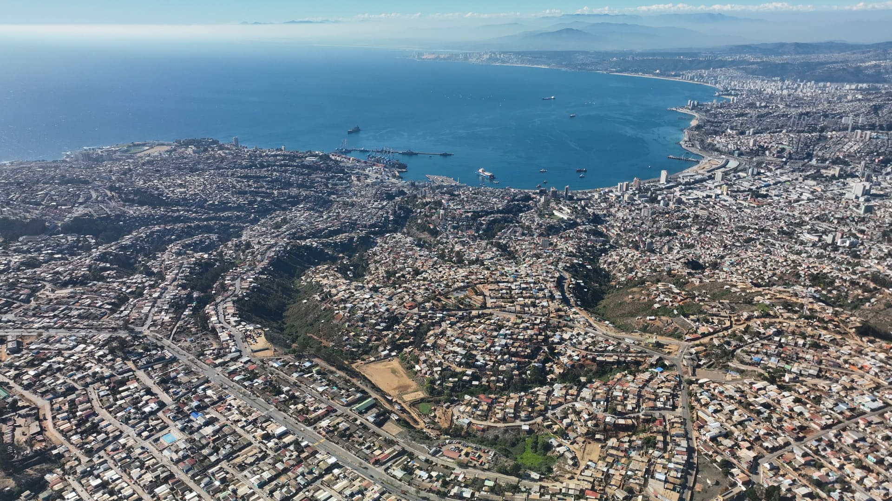
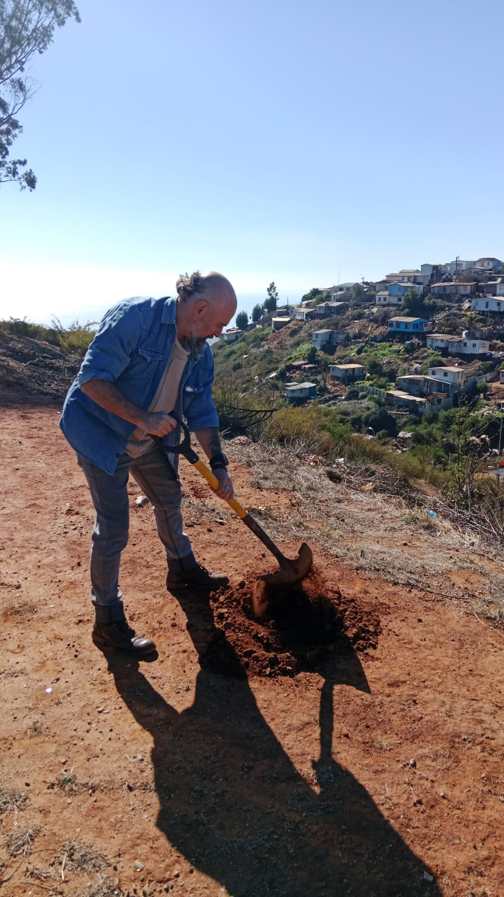
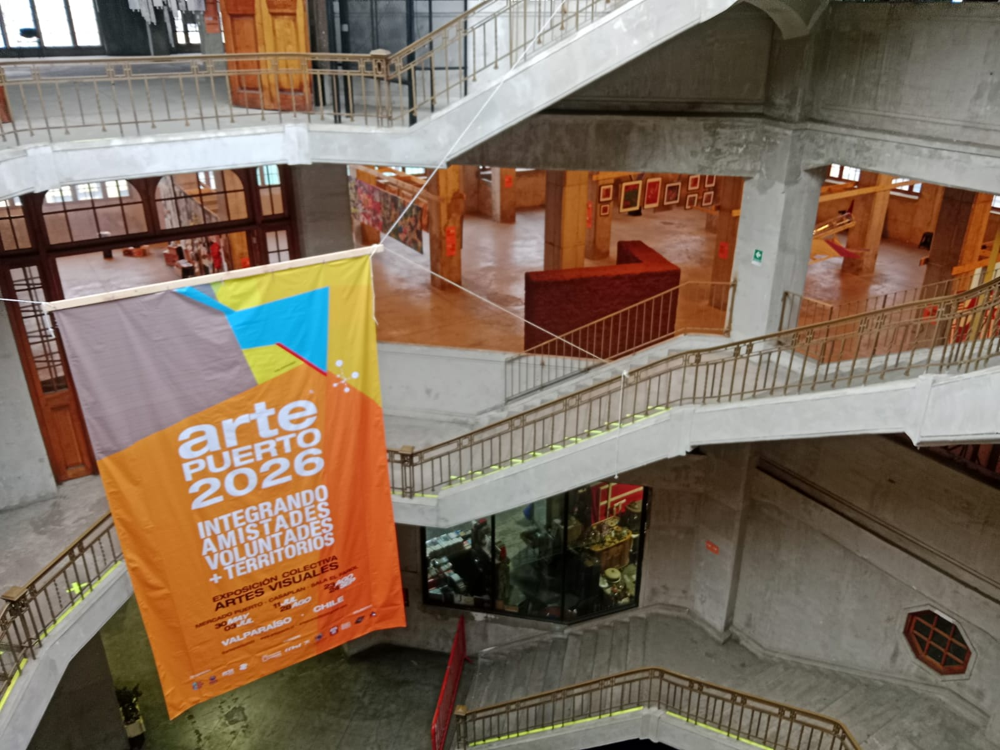
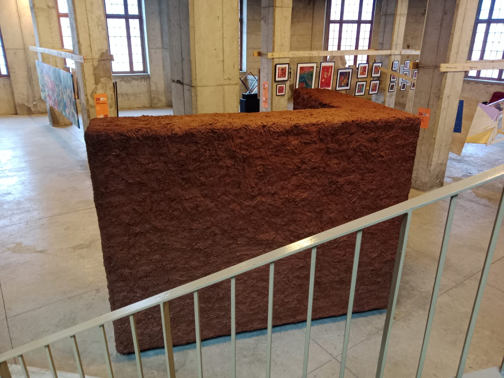
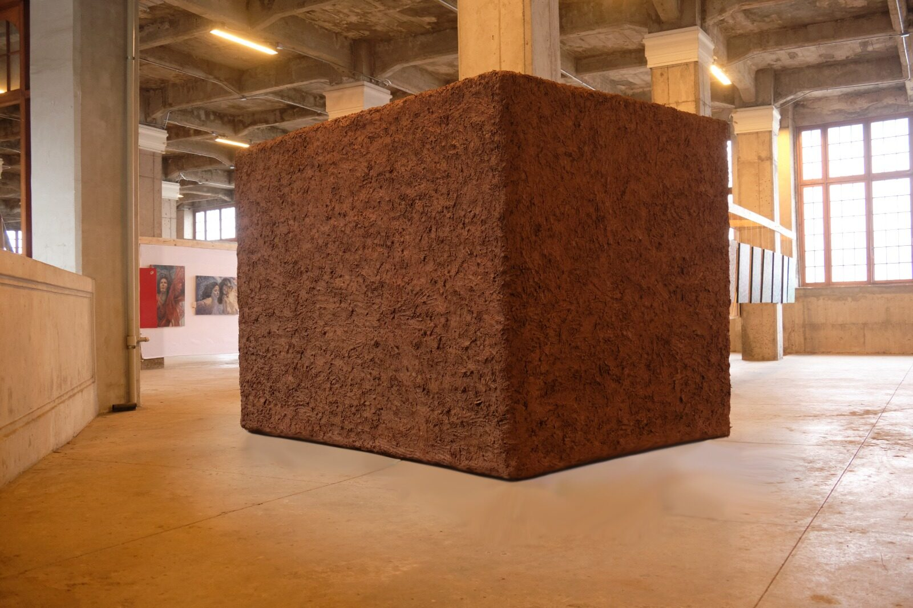
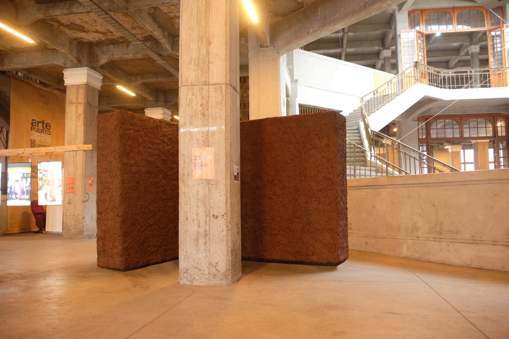
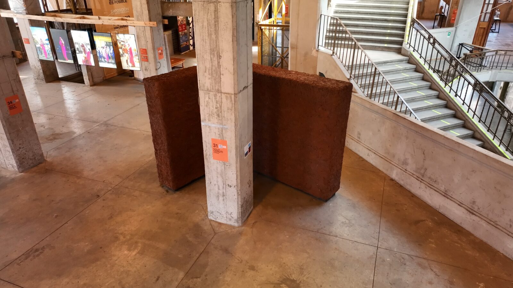
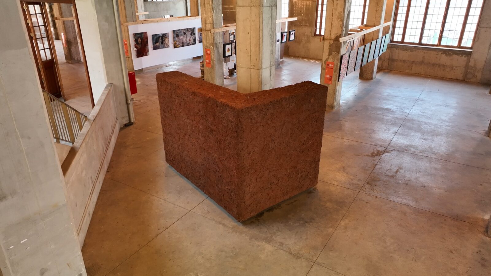

Dossier Nº 001
Pieza de Paisaje / Ele de Lodo
Muro en forma de Letra L construido como un trillaje de madera entramada cubierta de una mezcla de tierra con paja molida y agua, material extraído en los faldeos de la cancha El Hoyo, Puertas Negras. Mayo - Julio, 2026.








UbicaciónVALPARAÍSO
33°02′S · 71°38′O